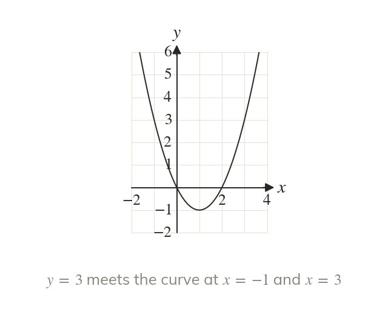
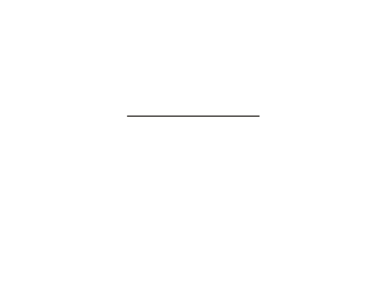
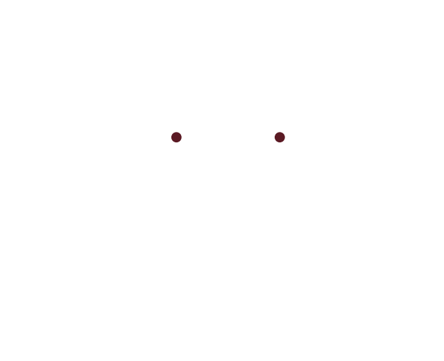

A horizontal line finds them
To solve draw the line
Each crossing with gives a solution.
The solutions of are where the curve meets the line
Each crossing gives one solution.
Each crossing gives one solution.